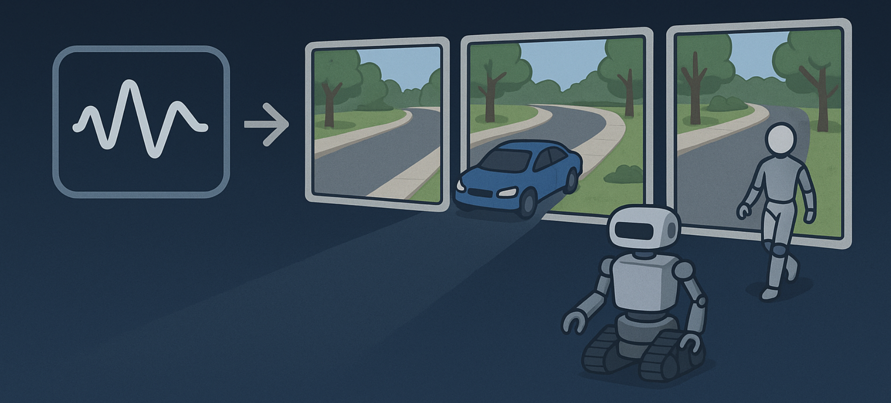
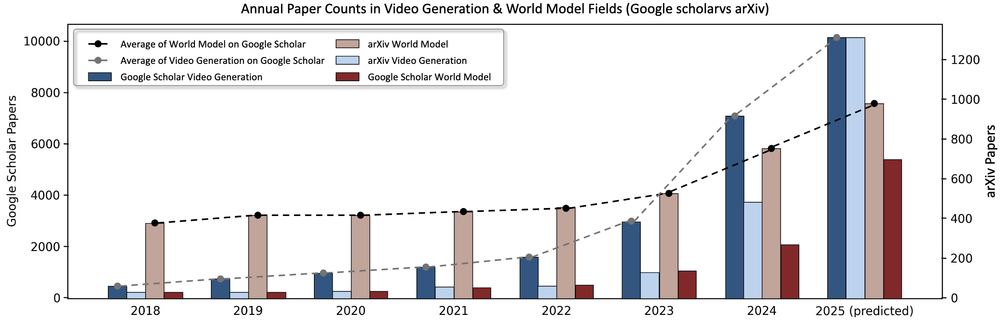
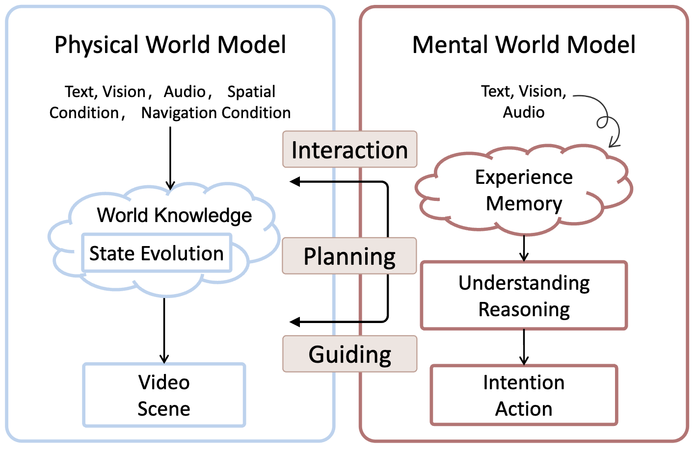
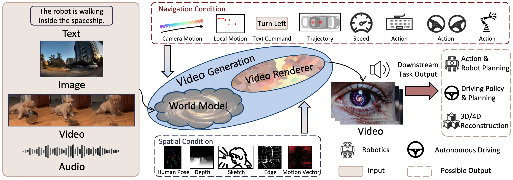
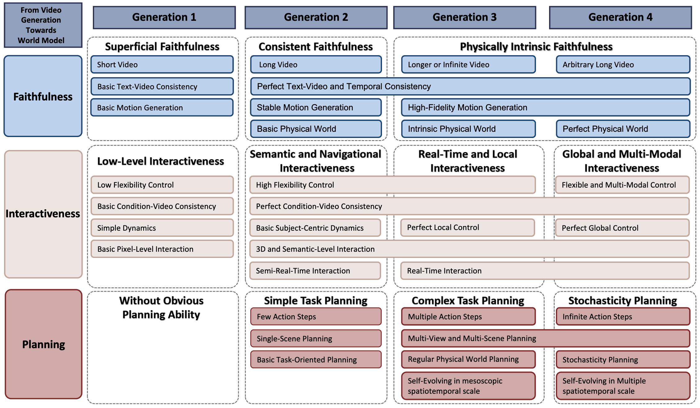
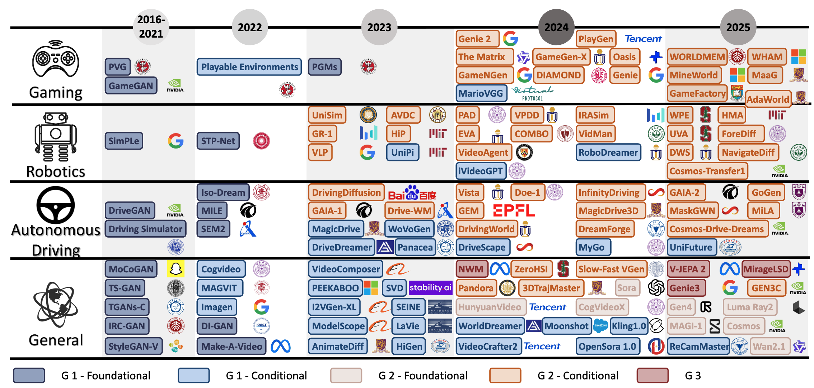
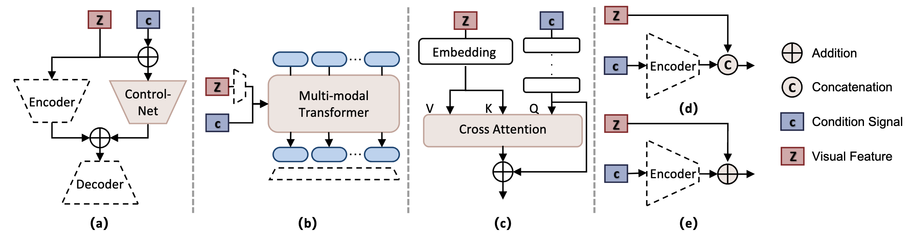
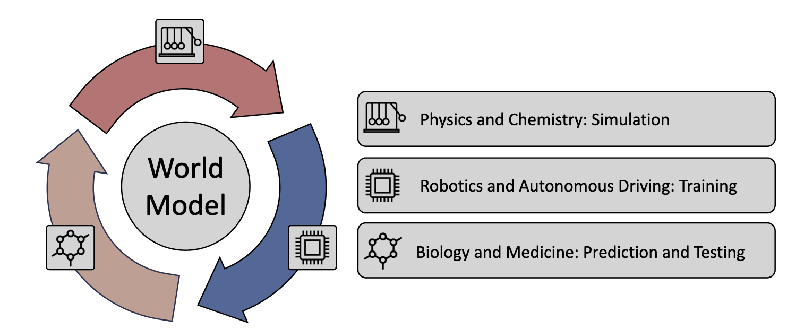

Jingtong Yue, Ziqi Huang†, Zhaoxi Chen, Xintao Wang, Pengfei Wan, Ziwei Liu*.
Carnegie Mellon University, Nanyang Technological University, Kling Team Kuaishou Technology
2025
† Project Lead * Corresponding Author
Video generation is evolving from merely creating visually appealing clips to constructing virtual environments that obey physical laws and enable real-time interaction. We conceptualize modern video foundation models as the fusion of two key components: an implicit world model that simulates physics and causal dynamics, and a video renderer that visualizes these internal simulations. Tracing this evolution, we propose a four-generation taxonomy from faithfulness, to interactiveness, to planning, and finally stochasticity, representing the gradual emergence of video-based world models that act as genuine simulators of reality.
Figure 1. Overview of 4 Generations and 3 Core Capabilities from Video Generation to World Model. The figure illustrates the key capabilities emphasized in the first through third generations of world models, as well as our insight for future world models. We outline a long-term vision of world models that can simulate a broad range of environments across multiple spatial and temporal scales. The figure highlights four foundational characteristics: real-time responsiveness, stochasticity, multi-scale planning, and intrinsic physical faithfulness. These collectively support the long-term goal of zero-shot generalization.
World models aim to simulate the physical and causal structure of reality, driving progress in robotics, autonomous driving, and embodied AI. Among various approaches, video generation stands out because vision inherently captures both spatial and temporal information. Advances in diffusion and autoregressive models now allow high-fidelity, long-term video synthesis that reflects real-world physics, making video generation a natural foundation for world modeling.

Figure 2. Overview of Annual Papers and Articles Paper Counts in Video Generation & World Model Fields. The article count was derived from searches conducted using the fixed keyword combination “video generation” and “world model” from Google Scholar and arXiv.
We distinguish between two complementary perspectives: the physical world model, which objectively simulates external dynamics, and the mental world model, which captures internal cognition, intention, and reasoning. The physical axis represents laws of motion and environmental evolution , while the mental axis embodies perception and intention. Understanding both is essential for bridging simulation and intelligent behavior.

Figure 3. The Characteristics of Physical World Model and Mental World Model. This figure highlights the distinct inputs, internal processes, and outputs, as well as the interaction through perception, planning, and guidance between the physical world model and the mental world model.
This survey focuses on how video generation evolves toward comprehensive world models capable of learning structured world knowledge for perception, reasoning, and planning. We emphasize multimodal systems that integrate text, vision, and control signals to simulate real-world dynamics and generalize across domains such as robotics, gaming, and scientific visualization.
We define a physical world model as a digital cousin of the real world, a simulator that captures objective world knowledge without replicating specific instances. It maps multimodal inputs (text, images, audio, actions, trajectories) to temporally coherent video outputs, effectively serving as a stochastic generative process. The model mirrors an MDP/POMDP: learning objective world dynamics during training, while performing subjective inference during generation.

Figure 4. Overview of the World Model Defined in this Paper. The world model must take inputs such as text, images, videos, audios or their combinations. It may also incorporate external conditions for interaction, including spatial conditions and navigation conditions. A video generation model is leveraged to process the intermediate state representations to produce video outputs, while other task-specific outputs may also be generated depending on the downstream application.
We define the navigation mode as a temporally evolving, content-independent, and spatially reasoning control interface that guides video generation. It differs from spatial conditions like depth or sketch maps because it allows genuine interaction and dynamic reasoning. This concept provides a theoretical tool to assess whether a video model truly exhibits planning and interactivity.
The roadmap of video generation toward world modeling can be viewed as a continuous progression along three capability axes: faithfulness,
interactiveness, and planning. Each generation focuses on one dominant ability while advancing the others in parallel. Together, these dimensions
represent the gradual evolution from visual realism to physically grounded simulation and intelligent reasoning.
(1) Generation 1: Faithfulness
The first generation emphasizes visual and temporal realism. Models in this stage can generate short, visually appealing clips that maintain basic text-video consistency and
object motion coherence. However, their “world” remains superficial: physical laws, 3D geometry, and task understanding are weak or absent. These systems rely heavily on static
spatial conditions like sketches or depth maps and show limited controllability, which are good at “showing” but not at “doing.”
(2) Generation 2: Interactiveness
The second generation marks the rise of controllability and semantic understanding. Models begin to support navigation modes such as trajectories, actions, or text instructions,
allowing humans or agents to influence the simulated world. They generate longer, coherent videos with consistent physics and improved subject centered control. Temporal
stability and semantic alignment make them capable of simple, goal-driven planning, e.g., executing a short sequence like “pick up the cup and pour water.” This stage forms the
bridge between pure generation and real-time simulation.
(3) Generation 3: Planning
Planning emerges as a defining capability. Generation 3 world models simulate complex, real-time, and self-evolving dynamics grounded in intrinsic physical knowledge. They can
produce infinitely extending sequences, adapt to external stimuli, and handle multi-entity interactions with causal coherence. For example, given the command “make a cup of
coffee,” the model can autonomously generate long sequences involving heating water, grinding beans, and pouring, all while maintaining spatial consistency and temporal logic.
Interaction becomes local and precise, with frame-level control and physical reasoning.
(4) Generation 4: Stochasticity
The fourth generation integrates probabilistic reasoning and multi-scale modeling, enabling simulation of both common and rare events. These models can represent uncertainties
and low-probability phenomena, like accidents, weather extremes, or biological variations, within realistic distributions. They unify microscopic (millisecond), mesoscopic
(everyday), and macroscopic (long-term) time scales, achieving global, multimodal interaction across language, vision, and control. In this stage, the world model behaves as a
general purpose simulator, capable of imagining countless plausible futures with physical and causal fidelity.

Figure 5. Overview of the Capabilities of World Model Across 4 Generations. This figure presents the three main capabilities of world models, along with their corresponding secondary capabilities under each category.
World modeling evolves along three parallel dimensions, faithfulness, interactiveness, and planning, which develop together rather than sequentially. Each generation highlights one main capability but continues improving the others, forming a continuous hierarchy. The methods discussed below are grouped by generation and application domains: general scenes, robotics, autonomous driving, and gaming, which collectively illustrate how controllable video generation matures into true world simulation.

Figure 6. Chronological Overview of Methods from Video Generation to World Models. The figure presents a chrono- logical overview along the horizontal axis, categorizing existing methods by four application domains along the vertical axis: general scenes, robotics, autonomous driving, and gaming. Additionally, different colors are used to indicate different genera- tions of world models.
In Generation 1, the goal is to produce short yet realistic video clips that maintain visual coherence and text-video alignment. This stage establishes the foundations of world modeling through video foundation models, spatial world models, and navigation world models.
Early diffusion, transformer, and VAE-based models such as LTX-Video, Open-Sora, and VideoCrafter generate visually consistent frames with basic temporal continuity. They learn general motion and appearance priors from large-scale data, supporting tasks like motion imitation and scene rendering. However, they still lack true 3D reasoning, physical causality, and goal-oriented planning.
Spatially conditioned models introduce additional inputs, such as depth maps, sketches, motion fields, or 3D geometry, to guide the generation process. Works such as Diffusion4D or PhysGen embed geometric or physical priors to enforce spatial consistency and realistic object interactions. While these signals improve controllability, they remain scene-dependent and static, offering limited flexibility for dynamic interaction.
Navigation world models incorporate temporal control signals like trajectories, camera motion, or text commands into the input space. They enable motion aware video generation and elementary interactivity. Methods like TrailBlazer, Peekaboo, and DriveDreamer demonstrate how adding trajectories or actions allows localized control of subject or camera motion. Yet, they remain limited to short sequences and single agent scenes.
Generation 2 represents a decisive shift toward dynamic, flexible control. Models now integrate multiple modalities, such as geometry, physics, actions, and language, to support long-horizon interaction and semantically consistent behavior. Faithfulness and planning also improve through richer conditioning and real-time responsiveness.

Figure 7. Overview of Condition Injection Strategies. This figure illustrates five representative strategies for condition injection. Subfigures (a) through (e) correspond to the ControlNet-based method, multi-modal Transformer, cross-attention, concatenation, and addition, respectively.
These models, such as Sora, HunyuanVideo, and MAGI-1, combine diffusion backbones with autoregressive or causal modules to improve temporal coherence. They learn not only to render visuals but also to predict and adapt to changes in the environment. Techniques like ControlNet, cross-attention, and multimodal transformers inject control signals efficiently, bridging foundation video models and interactive world simulators, as shown in Figure 7.
General scene approaches demonstrate how controllable video generation can generalize across environments.
In robotics, video based world models help agents visualize and plan their actions within physical environments. Systems like Cosmos-transfer1, UniSim, PAD, and VideoAgent integrate multimodal observations (vision, depth, text) to predict outcomes of robot motion. These models can generate and adapt visual plans conditioned on control signals or goals, providing a bridge between perception and decision-making in embodied learning.
Autonomous driving world models simulate road scenes for safe policy learning and planning. Methods such as Cosmos-Drive-Dreams, Gaia-2, DrivingWorld, and Vista generate realistic driving sequences conditioned on layouts, bounding boxes, and navigation maps. Later systems incorporate trajectory based and instruction based control to enable reactive and goal oriented driving video synthesis, supporting data generation for planning and reinforcement learning.
Gaming provides an ideal sandbox for interactive simulation. Works like Hunyuan-GameCraft, Genie-2, Oasis, and GameNGen treat video generation as a controllable game rendering engine, where users manipulate characters or scenes through controller signals or language instructions. These prototypes show how generative models can create dynamic, playable virtual worlds—an early form of open-ended digital simulation.
Generation 3 marks a major leap from controllable video generation to true simulation and forecasting. These models can plan and evolve the state of the world over long horizons while maintaining physical realism. They integrate intrinsic physics, causal reasoning, and self-evolving world dynamics to simulate how a scene changes in response to both internal and external factors. Models such as V-JEPA 2, MirageLSD, NWM, and Genie 3 represent this stage. They predict extended or even infinite sequences by reasoning over interactions among multiple agents, complex environments, and temporal dependencies. The resulting systems exhibit physically intrinsic faithfulness, their behavior obeys Newtonian and fluid dynamic principles, and real-time local interactiveness, allowing users or agents to modify objects and observe instant, consistent responses. This generation signals the convergence of video simulation and decision-making, providing a framework for embodied planning and scientific modeling.
The fourth generation introduces stochastic world modeling, where systems reason not only about what is likely but also about what could happen. Such models can generate both deterministic and random outcomes, capturing rare, “black-swan” events like accidents, weather anomalies, or biological variations, while preserving physical plausibility. They operate across multiple spatiotemporal scales:
Sections 4.1 to 4.4 collectively outline a hierarchical taxonomy where each generation deepens three key abilities: faithfulness, interactiveness, and planning, across diverse domains:

Figure 8. Overview of Further Applications of World Models. World models promise broad and long-term impact across diverse domains: simulating molecular structures and physical laws in physics and chemistry, generating synthetic training data and serving as virtual testbeds in robotics and autonomous driving, and enabling drug testing and protein structure prediction in biology and medicine.
Two major paths define the future of world models. (a) Precision Simulators: This direction pursues perfect physical fidelity models so accurate
they could pass a Turing Test for reality. Such systems would become scientific instruments for hypothesis testing and in silico experimentation.
(b) World Models for Decision and Control: In parallel, reinforcement learning research develops latent space dynamics for planning and control.
These models focus less on pixel realism and more on predictive internal representations that let embodied agents imagine,
act, and optimize policies before real-world execution. Together, these lines unite high fidelity simulation with decision oriented reasoning,
forming a bridge between environment and agency
A third complementary vision sees world models as generative engines of world
knowledge creative systems that can spawn countless consistent yet diverse virtual realities from the same initial conditions. In this paradigm,
world models evolve from mere observers to active creators of new worlds.
Future world models will profoundly influence science, industry, and everyday life. They can generate infinite interaction data for robotics, simulate rare failure cases for autonomous driving, and predict ecological or climate outcomes across biology, astronomy, and physics. For example, they might model microbial growth, atmospheric shifts, or animal habitats under different conditions helping anticipate extinction risks or climate driven disasters. By providing controllable, physically consistent virtual laboratories, world models could transform how humans experiment, learn, and design in the digital age.
The paper concludes that world models are converging into two synergistic paradigms as precision simulators for scientific understanding and as creative engines for knowledge generation. These systems will reshape how we perceive, reason, and act within both real and virtual worlds. Ultimately, the authors foresee world models evolving into general simulation intelligence: engines capable of modeling any environment, under any physics, at any scale, laying the foundation for the next era of embodied artificial intelligence.
If you find this work useful, please consider citing:
@article{yue2025video,
title={Simulating the World Model with Artificial Intelligence: A Roadmap},
author={Jingtong Yue, Ziqi Huang, Zhaoxi Chen, Xintao Wang, Pengfei Wan, Ziwei Liu},
journal={arXiv preprint arXiv:2511.08585},
year={2025}
}We would like to thank Jiaming Song for the discussions and valuable feedback.
1. Haochen et al., 2024, Ltx-video: Realtime video latent diffusion
2. Zangwei et al., 2024, Open-sora: Democratizing efficient video production for all
3. Haoxin et al., 2023, Videocrafter1: Open diffusion models for high-quality video generation
4. Hanwen et al., 2024, Diffusion4d: Fast spatial-temporal consistent 4d generation via video diffusion models
5. Shaowei et al., 2024, Physgen: Rigid-body physics-grounded image-to-video generation
6. Wan-Duo Kurt et al., 2023, Trailblazer: Trajectory control for diffusion-based video generation
7. Jain et al., 2024, Peekaboo: Interactive video generation via masked-diffusion
8. Xiaofeng et al., 2024, DriveDreamer: Towards Real-World-Drive World Models for Autonomous Driving
9. T. Brooks et al., 2024, Video generation models as world simulators
10. Weijie et al., 2024, Hunyuanvideo: A systematic framework for large video generative models
11. Hansi et al., 2025, MAGI-1: Autoregressive Video Generation at Scale
12. Lvmin et al., 2023, Adding conditional control to text-to-image diffusion models
13. Fenglin et al., 2025, SketchVideo: Sketch-based Video Generation and Editing
14. Zekai et al., 2025, Diffusion as Shader: 3D-aware Video Diffusion for Versatile Video Generation Control
15. Weikang et al., 2025, GS-DiT: Advancing Video Generation with Pseudo 4D Gaussian Fields through Efficient Dense 3D Point Tracking
16. Qiyao et al., 2025, Phyt2v: Llm-guided iterative self-refinement for physics-grounded text-to-video generation
17. Jing et al., 2025, Wisa: World simulator assistant for physics-aware text-to-video generation
18. Hao et al., 2025, CameraCtrl II: Dynamic Scene Exploration via Camera-controlled Video Diffusion Models
19. Xuanchi et al., 2025, GEN3C: 3D-Informed World-Consistent Video Generation with Precise Camera Control
20. Jiannan et al., 2024, Pandora: Towards general world model with natural language actions and video states
21. Aether et al., 2024, Aether: Geometric-aware unified world modeling
22. Alhaija et al., 2025, Cosmos-transfer1: Conditional world generation with adaptive multimodal control
23. Yanjiang et al., 2024, Prediction with action: Visual policy learning via joint denoising process
24. Yue et al., 2024, Videoagent: A memory-augmented multimodal agent for video understanding
25. Mengjiao et al., 2024, Learning interactive real-world simulators
26. Russell et al., 2025, Gaia-2: A controllable multi-view generative world model for autonomous driving
27. Xiaotao et al., 2024, DrivingWorld: ConstructingWorld Model for Autonomous Driving via Video GPT
28. Shenyuan et al., 2024, Vista: A generalizable driving world model with high fidelity and versatile controllability
29. Xuanchi et al., 2025, Cosmos-Drive-Dreams: Scalable Synthetic Driving Data Generation with World Foundation Models
30. Jiaqi al., 2025, Hunyuan-GameCraft: High-dynamic Interactive Game Video Generation with Hybrid History Condition
31. Parker-Holder et al., 2024, Genie 2: A large-scale foundation world model
32. Decart et al., 2024, Oasis: A universe in a transformer
33. Valevski al., 2024, Diffusion models are real-time game engines
34. Decart AI, 2025, MirageLSD: Zero-Latency, Real-Time, Infinite Video Generation
35. Parker-Holder et al., 2025, Genie 3: A new frontier for world models
36. Bar al., 2025, Navigation world models